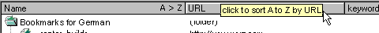
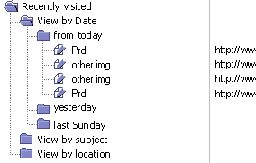

| Navigator 5.0 |
UI Specification
|
| Bookmarks and History |
Last Modification:
|
| Author
German W. Bauer Creation Date: 01 February 1998 |
Status: close to final, awaiting final feedback. Multiple refinements and coordination with PM, Netcenter still possible, esp. wrt. to preloaded Bookmarks. | |||||||||||||||||||
What's related:
Quick Index:
|
Feature Team
|
|||||||||||||||||||
The bookmarks and history UI will enable the user to use, browse and organize hierarchical lists of their data. Initially the UI described here will be deployed for bookmarks and history only.
5.0 Navigator will provide two top-level access points to Bookmarks:
Two different levels of History can be accessed in 5.0 Navigator namely the session history per window and a global history that is persistent across session. 5.0 will provide multiple access point to this history:
The underlying RDF database technology and its exposure of data to the UI was formerly dubbed Aurora. Initially this will be used for data like bookmarks, site maps or email items, but can eventually be extended to other future items as well (such as native files, people etc)
Provide simple integration of History and Bookmarks
Provide streamlined approach to Navigation, grouping related elements close to each other
Allow simple management of bookmarks inline
The target user for this feature are Communicator 5.0 users as described in the 5.0 PRD, but specifically no-fuss end-users that are trying to access and organze information quickly.
Fundamental Tasks Intermediate Tasks Advanced Tasks Common to viewing/managing Bookmarks as well as previously visited sites Browse list of items
Opening and closing containers
Access/activate an item
Find itemsMarquee selection (to select multiple items at on time)
View multiple item properties at a glance
Sort by name
Sort by other columnsSpecific to Bookmarks Add current page
Rename item
change URL
check on update
Rearrange the order of items
Create new folders, separators or new blank items
Undo
Move items inside or outside of containers
Transfer items inside or outside of paneTransfer via clipboard
Import
Export (as HTML and RDF)
Edit advanced item propertiesSpecific to Previously Visited Sites Go to recently visited site
view items by date/time visited
view items by subjectview grouped list by most frequently visited
view grouped list by site/domain visited
check last visit for each item
check frequency of visit for each itemdelete history
delete history tracking
The bookmarks bar will Navigator specific and user customized items for quick access
This is the location in Navigator
5.0 that we will exclusively reserved for and maintained by the end-user.
Promote convenient access to bookmarks, frequently used folders and links, as
well as to 'home' and 'My Netscape' .
Fundamental Tasks Intermediate Tasks Advanced Tasks Go to 'home' location Go to 'My Netscape' location Park items (bookmarks and folders) in custom section for quick access
Remove items from custom sectionReconfigure items in core section
|
|
|
|
|
| Component |
|
|
|
| Purpose | These are the core level access points for sites related to the internet. Even though they are slightly different than items in the other sections (core, in there by default), all of these feature some kind of personalization/customization aspect | Let users 'park' links here for quick and frequent access |
|
| Presentation |
|
|
|
| Can be removed by end user? |
|
|
|
Location: On the core section of the bookmarks toolbar, to the right of "Home" and "My Netscape"
Contents: somewhat Subject to discussion with Netcenter, the current thinking is to integrate history into bookmarks under "previously visited" to aid discoverability. In previous usability studies it was evidenced time and time again that the concept of history by itself is not well understood. On the other hand history is most often used as a means of Navigation, so placing it there and renaming it to "previously visited" will actually result in an improved discoverability.
Look: similar to other list views (current design depicted is a placeholder)
Behavior: popped-up bookmarks list stays open, until a bookmark is 'launched' through double clicking.
- tree look with folders for easy filing
- different looking Netscape folders to distinguish from native folders which we might add later
- single click to select an item when mousing over that item
- 2nd single click on selected item results in inline editing of the item's name on win32, on mac it's timeout based (hovering over item)
- double click to launch the item (and dismiss the pop-up)
- allowing marquee/mult. selection
- full drag in/out/around capabilities.
right click (on win32) or timeout/ctrl click on Mac OS 8 will invoke contextual menu (details see below), showing items for list only , or for selected item and list- show just name column and allow sorting only on that column via contextual menu
- While open, the corresponding folder button on the toolbar will display the mouse down look (ie. open folder, hilite around button area etc). The top left origin of the popped-up list should be placed flush left with the button when space is available, and also vertically such as to give the impression of being attached to the location of the popup menu. In this presentaion the list will not show it's own titlebar since the list name is already featured in the folder on the toolbar.
Full window presentation:
with essentially the same behavior as described in the popup list section above with some key differences:
- This window will have it's own menu
- make the window wider by default and show 2-3 columns when opening
- this way we can use the column header interface more effectively to allow direct manipulation sorting
- we should probably rethink the way the column header interface works with those < and > buttons as nobody understood what those did. I suggest that we leave the column width alone when the window width is enlarged and display more columns instead.
- We also need more descriptive feedback to indicate the sort state as well as the clickable column header areas like this: (in addition to the Mac's column hiliting

Groupings shown in History
maybe out for 5.0 in which case we use simple column sorting instead (see menus)?
Groupings in history allow users quick "view by" access without requiring managing table and sort headers.view items by date/time visited view items by subject view items by frequency of visit (this will be shown not in the history folder, but in bookmarks instead based on usability feedback) view items by site


Legend for menus:
Keyboard shortcuts combined with Ctrl(Win), Cmd(Mac) or Alt(Linux) are
Keyboard shortcuts to be used stand-alone are
Notes are marked like this
Keyboard mnemonics (Win, Linux) are marked like this
| Structure | |
|
Add Current Page
Customize Bookmarks Bar... Manage Bookmarks... Bookmarks Folder 1 > Bookmarks Folder 2 > Bookmarks Folder n > Toplevel Bookmark 1 Toplevel Bookmark 2 Toplevel Bookmark 3 Toplevel Bookmark 4 Toplevel Bookmark 5 Toplevel Bookmark 6 Toplevel Bookmark 7 Toplevel Bookmark 8 Toplevel Bookmark n |
Navigation... The Go Menu in Nvaigator offers one stop access to to one level back and forward and home page as well as random-accessing the next of previous ten location in the immediate session history. The next section offers access to the recorded overall history "Previously Visisted". The first item of the "Previously Visited " submenu is "Show All... Ctrl-H" which will give users a detailed overview much like in the "Manage Bookmarks" window. Then separated by a separator, the most 20 most recently visisted sites are listed in the submenu. |
| Structure | ||
|
Navigation... The Go Menu in Nvaigator offers one stop access to to one level back and forward and home page as well as random-accessing the next of previous ten location in the immediate session history. The next section offers access to the recorded overall history "Previously Visisted". The first item of the "Previously Visited " submenu is "Show All... Ctrl-H" which will give users a detailed overview much like in the "Manage Bookmarks" window. Then separated by a separator, the most 20 most recently visisted sites are listed in the submenu. |
applies when list is presented in it's own window
These are based on the new menu framework
These are subject to change based on the new menu framework
| Selected Folder in Bookmarks List | Selected Bookmark in Bookmarks List | Selected Separtor in Bookmarks List | Anywhere else in Bookmarks List | |||
|
| Selected Folder in History List | Selected Bookmark in History List | Anywhere else in History List | |||
|
We will attempt to listen to the basic Nav Appearance
prefs where appropriate.
Advanced/technical prefs will be located in each
object's properties dialog, accessible through the contextual menus
The will be a way to clear the history cache from prefs (similar to 4.x)
Condition Message User Choices
Rev 1: first stab, based on usability testing, UI design docs and FE eng and tech specs
Rev 2: we settled on tying presentation type (seperate window, docked etc) to behavior:separate window = behaves like OS file window
popup or docked = behaves like web linksRev 3: after second usability test, completely removing modal behavior, double click behavior in lists, whereas the smart browsing area follows a web page like behavior
Rev 4: incorporating new UI designsRev 5: updating spec to match other seamonkey/Navigator 5.0 specs
|